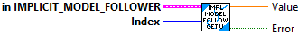

Returns the next output of the controller.
Inputs:
- in Implicit Model Follower -- Input data cluster
- x -- The current state x.
- u -- The current input for the original model.
Outputs:
- out Implicit Model Follower -- Updated data cluster
- U Out -- The next controller output.
- Error -- Returns TRUE if an error occured.

Returns the control input vector u.
Inputs:
- Implicit Model Follower -- Input data cluster
Outputs:
- U -- The control input.

Returns an element of the control input vector u.
Inputs:
- Implicit Model Follower -- Input data cluster
Outputs:
- Index -- Row of u.
- U -- The control input value.

Implicit model following lets us design a feedback controller that erases the dynamics of our system and makes it behave like some other system. This can be used to make a drivetrain more controllable during teleop driving by making it behave like a slower or more benign drivetrain.
Create implicit model follower
Inputs:
- A < states, states > -- Continuous system matrix of the plant being controlled.
- B < states, inputs > -- Continuous input matrix of the plant being controlled.
- A_Ref < states, states > -- Continuous system matrix whose dymanics should be followed.
- B_Ref < states, inputs > -- Continuous input matrix x whose dymanics should be followed.
Outputs:
- Implicit Model Follower -- Created data cluster
- Error -- If TRUE, an error occured.

Implicit model following lets us design a feedback controller that erases the dynamics of our system and makes it behave like some other system. This can be used to make a drivetrain more controllable during teleop driving by making it behave like a slower or more benign drivetrain.
Create implicit model follower
Inputs:
- Plant -- The plant being controlled.
- PlantRef -- The plant whose dynamics should be followed.
Outputs:
- Implicit Model Follower -- Created data cluster
- Error -- If TRUE, an error occured.

Resets the controller.
Inputs:
- in Implicit Model Follower -- Input data cluster
Outputs:
- out Implicit Model Follower -- Updated data cluster